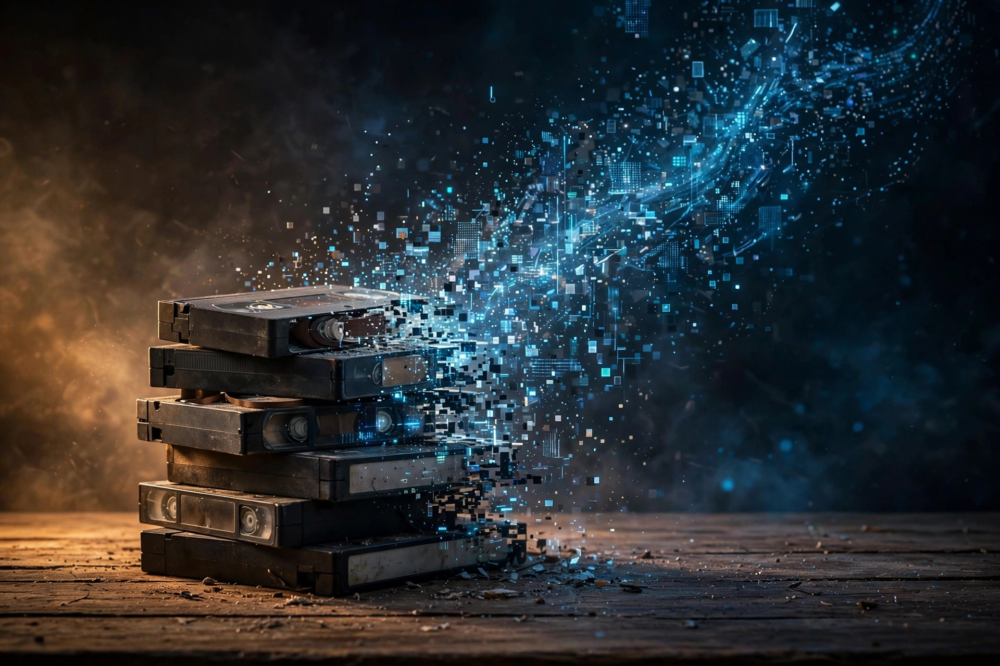
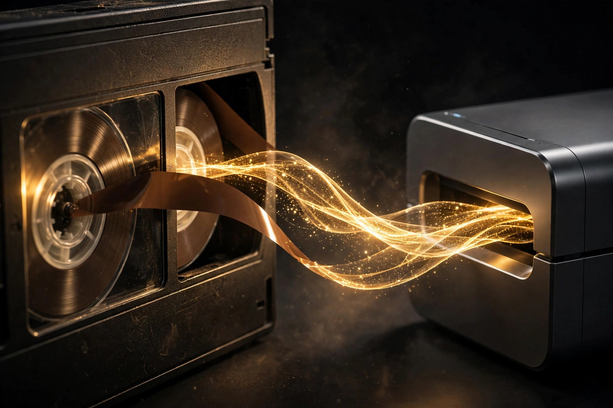
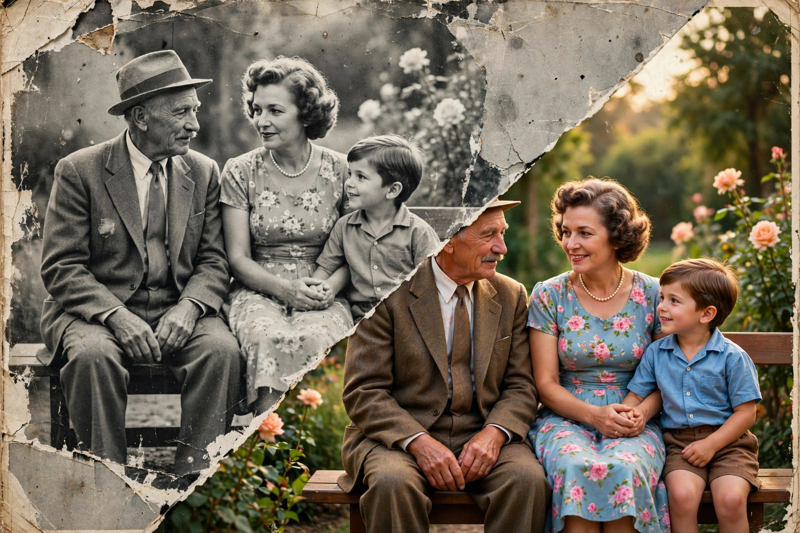
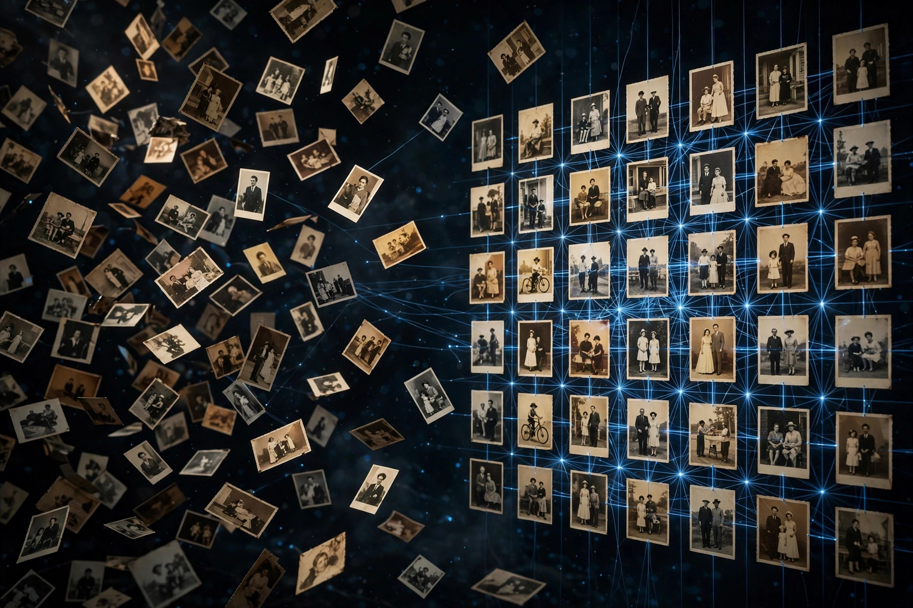

Мы оцифровываем видеокассеты и дневники, подключаем искусственный интеллект и наводим порядок в тысячах ваших фотографий. Всё, что вы помните, — в архиве, который не выцветает, не рвётся и не теряется.
Магнитная лента видеокассет разрушается за 10–25 лет. Краски фотографий выцветают, бумага желтеет, а коробки с семейными архивами пылятся на антресолях. Каждый год ожидания — это кадры, которые уже никогда не вернуть.

Сигнал слабеет с каждым годом. То, что ещё можно спасти сегодня, через пять лет станет шумом.
Тысячи снимков без дат, без имён, без порядка. Найти нужный — всё равно что искать иголку в стоге сена.
Пока архив лежит в коробке, им никто не пользуется. Оцифрованная память живёт: её смотрят, ею делятся, её наследуют.
Каждую можно заказать отдельно. Вместе они превращают коробки с прошлым в живой цифровой архив.
VHS, Video8, MiniDV и другие форматы — в чистый цифровой файл. Покадровая оцифровка, удаление шумов, стабилизация. Оригиналы возвращаем вместе с цифровыми копиями.

Искусственный интеллект распознаёт лица и сцены, восстанавливает повреждённые кадры, повышает чёткость старых записей и расшифровывает рукописный текст дневников. Машина делает рутину — человек остаётся автором воспоминаний.
Тысячи снимков раскладываем по людям, датам и событиям. А рукописные дневники и письма сканируем и расшифровываем с помощью AI — почерк превращается в текст, который можно читать и искать. Хаос превращается в архив, где всё находится за секунды.
Шесть шагов — от коробки на антресоли до архива, который можно смотреть с телефона.
Напишите, что у вас есть: сколько кассет, какие форматы, сколько фотографий, есть ли дневники и письма. Этого достаточно для оценки.
Кассеты и фотоальбомы передаются в работу. Каждый носитель маркируется — ничего не потеряется и не перепутается.
Кассеты переводятся в цифровой формат покадрово. Фотографии сканируются в высоком разрешении.
Искусственный интеллект распознаёт лица, сцены и даты, восстанавливает повреждённые кадры, убирает шумы.
Материалы раскладываются по людям, событиям и годам. Вы получаете структурированный архив с поиском.
Оригиналы возвращаются вам. Цифровой архив доступен с любого устройства — смотреть, делиться, наследовать.
Архив — это не ностальгия. Это сознание семьи, записанное внешним носителем.

Они никогда не видели деда молодым. Оцифрованный архив — это встреча, которая иначе не состоится.
Человеческая память стирается за поколение. Цифровая — нет, если о ней позаботиться вовремя.
AI делает то, на что у человека ушли бы месяцы: разбирает тысячи файлов за дни и не устаёт.
Короткие ответы.
VHS, Video8, MiniDV и большинство бытовых форматов. Если сомневаетесь в своём формате — опишите его в заявке, подскажем.
Все оригиналы — кассеты, фотографии, альбомы — возвращаются вам после оцифровки. Мы храним только цифровые копии, которые вы забрали.
Нейросеть распознаёт лица, группирует снимки по людям, определяет примерные даты и события. Затем архив проверяется человеком — машина не решает за вас, что важно.
Зависит от объёма архива. Небольшая коллекция — дни, семейный архив за десятилетия — недели. Точный срок называем после описания архива.
Да. Дневники, письма и документы сканируются в высоком разрешении, а рукописный текст расшифровывается с помощью AI — его можно читать, копировать и искать, как обычный текст. Оригиналы возвращаются в целости.
Стоимость зависит от количества носителей и объёма работы. Опишите свой архив в форме ниже — ответим с оценкой.
Напишите, что у вас хранится, — ответим с оценкой сроков и стоимости.